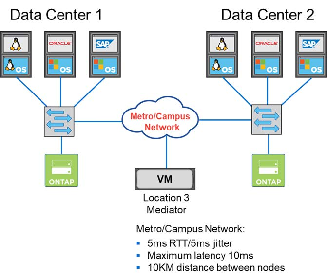

Notas de la versión
Notas de la versión
Almacenamiento definido por software de MetroCluster
 Sugerir cambios
Sugerir cambios
El almacenamiento definido por el software de ONTAP Select MetroCluster ofrece una protección mejorada y una implementación rentable.
Un clúster de dos nodos se puede estirar entre dos ubicaciones si se cumplen ciertos requisitos mínimos. Esta arquitectura se adapta perfectamente a la perfección al MetroCluster basado en hardware y a los clústeres de un único centro de datos (definido por hardware o definido por software). Los requisitos para el SDS de ONTAP Select MetroCluster destacan la flexibilidad general de las soluciones de almacenamiento definido por software, así como las diferencias entre la tecnología y el SDS de MetroCluster basado en hardware. No se necesita hardware propio.
A diferencia de MetroCluster, ONTAP Select usa la infraestructura de red existente y admite una latencia de red de hasta 5 ms RTT con una inestabilidad máxima de hasta 5 ms, para un total de 10 ms de latencia máxima. También se requiere una distancia máxima de 10 km, aunque el perfil de latencia es más importante. Los requisitos de separación en el espacio de mercado tienen más que ver con la separación física que la distancia real. En algunos casos, esto puede significar diferentes edificios. En otros casos, puede significar diferentes habitaciones en el mismo edificio. Independientemente de la ubicación física real, lo que define un clúster de dos nodos como SDS de MetroCluster es que cada nodo utiliza un switch de enlace ascendente independiente.
Como parte de la configuración de alta disponibilidad de dos nodos, se necesita un mediador para identificar adecuadamente el nodo activo durante la recuperación tras fallos y evitar una situación de cerebro dividido en la que ambos nodos permanezcan activos de forma independiente durante una partición de red. Esta operación es idéntica a la configuración de alta disponibilidad de dos nodos normal disponible anteriormente. Para obtener protección y conmutación al nodo de respaldo durante el fallo del sitio, el mediador debería ubicarse en un sitio diferente al de los dos nodos de alta disponibilidad. La latencia máxima entre el mediador y cada nodo ONTAP Select no podrá superar los 125 ms.
Con esta solución, los clientes empresariales pueden aprovechar con confianza la flexibilidad de una solución de almacenamiento definido por software en hardware genérico. Pueden realizar puestas en marcha con tranquilidad sabiendo que los datos están protegidos con una solución de objetivo de punto de recuperación 0 de clase empresarial.
El almacenamiento definido por el software de ONTAP Select MetroCluster proporciona las siguientes ventajas:
-
El SDS de MetroCluster proporciona otra dimensión (centro de datos a centro de datos) de protección para ONTAP Select. Los clientes ahora pueden aprovechar este nivel extra de protección además de todos los beneficios del almacenamiento definido por el software y ONTAP.
-
El almacenamiento definido por el software de MetroCluster proporciona protección de datos crítica para el negocio con un objetivo de punto de recuperación 0 y conmutación por error automática. Tanto el almacenamiento de datos como los puntos de acceso de la aplicación se cambian automáticamente al centro de datos superviviente o nodo sin intervención alguna del DEPARTAMENTO DE TECNOLOGÍA.
-
El SDS de MetroCluster es rentable. Aprovecha la infraestructura de red existente para permitir resiliencia ampliada entre la pareja de alta disponibilidad sin necesidad de hardware adicional. También ofrece acceso activo/activo a los datos y redundancia del centro de datos en el mismo clúster.
MetroCluster SDS

Para obtener más información acerca de las prácticas recomendadas y otros requisitos, consulte las secciones "Alta disponibilidad de dos nodos frente a la alta disponibilidad de varios nodos" y.. "Prácticas recomendadas de alta disponibilidad (SDS de MetroCluster) extendidas de dos nodos".